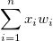
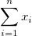
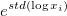
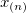
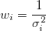
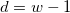
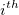
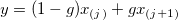

列の統計ダイアログボックス
DescStats-Dialog
サポート情報
再計算
再計算オプションの詳細は、分析結果の再計算を参照してください。
入力
空のデータセットを除外
このチェックをつけると、空のデータセットを計算に使用しません。
テキストデータセットを除外
このチェックをつけると、テキストデータセットを計算に使用しません。
入力データ
インデックスまたは素データから入力データモードを指定します。
値
モーメント
 番目のサンプルを
番目のサンプルを とし、番目のサンプルを
とし、番目のサンプルを とします。
とします。
| N合計 |
Nで表されるデータポイントの総数
|
| N 欠損 |
欠損値の数
|
| 平均 |
平均（アベレージ）スコア
 .WEIGHT変数がない場合、式は .WEIGHT変数がない場合、式は になります。 になります。
|
| 標準偏差 |
ここで、 です。 です。
Note: OriginProでは,  に4つ以上のオプションがあり、これは、 モーメントの分散除数項目で定義されます。 に4つ以上のオプションがあり、これは、 モーメントの分散除数項目で定義されます。
|
| 平均値のSE |
平均の標準誤差です。
|
| 平均の下側95%信頼区間 |
平均の95%信頼区間の下側限界
}\frac s{\sqrt{n}}")
ここで、}") は、ｎ-1 の自由度を持つスチューデントt -統計の 棄却値です。 は、ｎ-1 の自由度を持つスチューデントt -統計の 棄却値です。
|
| 平均の上側95%信頼区間 |
平均の95%信頼区間の上側限界
ここで、 は、ｎ-1 の自由度を持つスチューデントt -統計の 棄却値です。
|
| 分散 |

|
| 合計 |
.WEIGHT変数がない場合、式はになります。 |
| 歪度 |
歪度は、分布の非対称性の度合いを測るものです。以下のように定義されています。
^3,\mbox{for WVR}")
Note: WDFおよびWS法が選択されていると、歪度は欠損値として返されます。
|
| 尖度 |
尖度は、分布のとがり具合を表します。
Note: WDFおよびWS法が選択されていると、尖度は欠損値として返されます。
|
| 未修正平方和 |
|
| 修正平方和 |
^2")
|
| ばらつきの係数 |

|
| 平均絶対偏差 |
|
| SDの2倍 |
標準偏差の2倍です。

|
| SDの3倍 |
標準偏差の3倍です。

|
| 幾何平均 |
 ^{\frac 1n}")
Note: 幾何平均では重みは無視されます。
|
| 幾何SD |
幾何学標準偏差  ここで、std は、重み付けされていない標準偏差です。
Note: 幾何標準偏差では重みは無視されます。
|
| モード |
モード（最頻値）は、データ範囲で最も頻繁に表示される要素です。最頻値が複数ある場合は、最小のものが選択されます。
|
| 重みの合計 |

|
| 調和平均 |
調和平均です。
重みなし: ^{-1}}n\right)^{-1}")
重み付き: ^{-1}")
任意の または重みが負の場合、欠損値を返し、任意のまたは重みが0の場合は0を返します。 または重みが負の場合、欠損値を返し、任意のまたは重みが0の場合は0を返します。
|
分位数
分位数は、データからの値で、与えられたセットのデータポイントの所定の割合です。たとえば、任意のデータセットのデータポイントの25％が最初の四分位数より下にあり、データポイントの50％が2番目の四分位数または中央値より下にあります。
入力データセットを昇順で並べ替えます。\,") を、並べ替えられたデータセットの番目の要素とします
を、並べ替えられたデータセットの番目の要素とします
| 最小値 |
}\,")
|
| 最小値のインデックス |
元の入力データセットで最小値がある行の番号です。
|
| 第一四分位(Q1) |
第1 (25%) 四分位、Q1です。計算方法については、分位数の補間を参照してください。
|
| 中央値 |
メディアンまたは第2 (50%)四分位、Q2です。計算方法については、分位数の補間を参照してください。
|
| 第3四分位(Q3) |
第3 (75%) 四分位、 Q3です。計算方法については、分位数の補間を参照してください。
|
| 最大 |

|
| 最大値のインデックス |
元の入力データセットで最大値がある行の番号です。
|
| 四分位範囲 (Q3-Q1) |

|
| 範囲 (最大-最小) |
最大 - 最小
|
| カスタムパーセンタイル |
カスタムパーセンタイルを計算する場合チェックを付けます。
|
| パーセンタイルリスト |
このオプションは、カスタムパーセンタイルにチェックが付いている場合にのみ利用できます。ここに入力された全ての値でのパーセンタイルが計算されます。
|
| 中央値の絶対偏差(MAD) |
単変量データセットX1、X2、...、Xnの場合、MADはデータの中央値からの絶対偏差の中央値として定義されます。
|)\,")
つまり、データの中央値からの残差(偏差)で始まる場合、MADは絶対値の中央値です。
|
| ロバスト変動係数 |
)/Median\,")
|
極値
極値を返します。極値は、最も高い値と最も低い値です。
ここで、ｎはデータセットの長さです。
計算制御
重み付け法
入力データに対する重み付け方法を選択します。
| 直接重み付け |
 ここで、 ここで、 はi 番目の重み付けデータセットです。 はi 番目の重み付けデータセットです。
|
| 機械的 |
 ここで、 は、指定されたエラーバー列の値です。 は、指定されたエラーバー列の値です。
|
| 統計 |
。ここで、 は入力データです。 は入力データです。
|
モーメントの分散除数
分散除数d の計算を制御します。
| DF |
自由度

|
| N |
欠損していない観測値の数
|
| WDF |
重みのあるDFの合計

|
| WS |
重みの合計

|
| WVR |
|
分位数の補間
Q1、Q2、Q3を求める方法を決めます。
番目のパーセンタイル(分位)をyとし、 を設定します。そして、次のように定義します。
を設定します。そして、次のように定義します。
p=j+g, & \mbox{for Weighted Average Right } \ np=(j+g),& \mbox{for other methods } \end{cases}")
ここで、 j は、np, の整数部で、 g は、np の分数部であり、それぞれ異なる方法は 番目のパーセンタイル、 yを次に述べる方法で定義します。
| 平均化による経験分布 |
|
| 最近傍 |
 に最も近い番号の観測値 に最も近い番号の観測値
},& \mbox{if }\ g=\frac 12 \mbox{ and j is odd} \end{cases}") ここで k は、 ここで k は、 の整数部です の整数部です
|
| 経験分布 |
}, & \mbox{if }\ g=0 \ x_{(j+1)},& \mbox{if }\ g>0 \end{cases}") |
| 加重平均（右） |
p)}\,") に向けた加重平均 に向けた加重平均
 ここで }\,") は、の値を取ります。 は、の値を取ります。
|
| 加重平均（左） |
}\,") に向けた加重平均 に向けた加重平均
ここで  は、 は、 の値を取ります。 の値を取ります。
|
| Tukey Hinges |
以下のようにする。
すると、次のようになります。
}\,")
}+x_{(m+1)}),& \mbox{if n is even} \end{cases}")
},& \mbox{if m is odd} \ \frac 12(x_{(n-k)}+x_{(n-k+1)}),& \mbox{if m is even} \end{cases}")
|
|
Note: 重みが指定されていると、重み付けされたパーセンタイルが計算されます。p番目の重み付けされたパーセンタイル y は、平均を持つ経験分布関数}+x_{(i+1)}),& \mbox{if } \sum_{j=1}^i w_j=pw \ x_{(i+1)},& \mbox{if } \sum_{j=1}^{i} w_j<pw<\sum_{j=1}^{i+1}w_j\ x_{(1)},& \mbox{if } \ pw<w_1 \ x_{(n)},& \mbox{if } \ pw<w_n \ \end{cases}") から計算されます。 から計算されます。
|
出力
 |
Origin 2022以降、グループ列の入力列のフォーマットは出力シート（例：DescStatsQuantities）で維持されます。たとえば、日時データの列に統計を実行する場合、出力シートでの列のフォーマットは自動で日時として設定されます（以前は、テキストとしてフォーマットされていました）。以前の動作に戻すには、@SCCSF = 0を設定します。システム変数の値を変更する方法については、FAQ-708 システム変数を永続的に変更するにはにあるシステム変数の変更を参照してください。
|
| グラフ |
結果のプロットの配置を制御します。
- グラフを縦列に配置します。
- 出力グラフを配置する列数を指定します。
- グラフ中に同じ形式のプロットを配列
- チェックを付けると、同じグラフタイプのものは全て1つのグラフウィンドウにプロットします。
|
| データセット識別子 |
元のデータセットの識別子を選択します。
- 識別子
- リストから選択します。
-
- 範囲シンタックスを使用します。
- ワークブックのロングネームを使用します。
- ワークシート名を使用します。
- 存在する場合はロングネームを使用し、ない場合はショートネームを使用します。
- 列ショートネームを使用します。
- 列ロングネームを使用します。
- 列単位を使用します。
- 列コメントを使用します。
- カスタムフォーマットを使ってデータ識別子を指定します。これを使用するには、詳しく凡例テキストの編集をするを参照してください。
- フラットシートに識別子を表示
- 結果のフラットシートでデータセット識別子を使用します。
|
| レポート表 |
レポートワークシート表の出力場所です。
- ブック
- 出力ワークブックです。
- <なし>: レポートワークシートテーブルを出力しません。
- <ソース>: 元データのワークブックを使います。
- <新規>: 新しいワークブックを作成します。
- <既存>: 既存のワークブックを使います。
- ブック名
- 出力ワークブックです。ソース（編集不可）、新規、既存のもの（編集可）から選択します。
- シート
- 出力ワークシートで、常に新しいシート <新規>に出力します。
- シート名
- 出力シートの名前です。
- 結果ログ
- 結果ログにレポートを出力します。
- スクリプトウィンドウ
- スクリプトウィンドウにレポートを出力します。
- ノートウィンドウ
- 出力するノートウィンドウを指定します。
- <なし>: ノートウィンドウに出力しません。
- <新規>: 新しいノートウィンドウに出力します。
|
| 値 |
値の出力先を指定します。
- ブック
- 出力先のワークブックを指定します。
- <なし>: 値を出力しません。
- <ソース>: 元データのワークブックを使います。
- <レポート>: レポート表ワークブックを作成します。
- <新規>: 新しいワークブックを作成します。
- <既存>: 指定した既存のワークブックを使用します。
- ブック名
- 出力ワークブックです。ソース（編集不可）、新規、既存のもの（編集可）から選択します。
- シート
-
- <新規>: 新しいワークシートを作成します。
- <ソース>: 元データのワークシートを使います。
- <既存>: 指定した既存のワークシートを使用します。
- シート名
- 出力シートの名前です。
|
| オプショナルなレポートテーブル |
レポートワークシートに出力する項目を指定します。
- ノート
- ノート表
- 入力データ
- 入力データのテーブル
- マスクされたデータ
- マスクデータのテーブル
- 欠損データ
- 欠損値のテーブル
|
プロット
| ヒストグラム |
結果シートにヒストグラムを出力します。
ここにチェックを付けると、詳細の設定項目が表示されます。以下の項目があります。
- データ高さドロップダウンでヒストグラムのY軸を決定します。
-
- カウント: Y 軸でビンカウントを表示します。
- 相対頻度: Y軸で合計カウントで割った個別のビンカウントを表示します。
- 密度: Y軸は、ビン幅で割った相対頻度（特定のビン内の観測数）を表示します。
- 自動ビン化チェックボックスはデフォルトで選択されています。自動ビン化のチェックを外すと、ビンサイズ、ビンの数、開始、終了が表示されます。
| Note: 入力データが複数の列の場合、自動ビン化 は列ごとに独立した設定を使用するため、ビン化と軸の範囲が大きく異なる場合があります。この場合、Originは各列に制限値（編集不可）を表示します。自動ビン化チェックボックスのチェックが付いていないと、これらの項目は、初期値で編集できます。
ビンサイズ、開始、終了の値を設定すると、ビンの数が自動的に計算されます。
ビンの数とビンサイズは、増分値で変更することができます。
ビンの数 = (開始 - 終了) / ビンサイズ
|
|
| ボックスチャート |
レポートシートにボックスチャートを出力します。入力データがグループ列を持つ場合、それに応じてボックスチャートもグループ化されます。グループ列がカテゴリーとして設定されていると、ボックスチャートは、グループ範囲に対するカテゴリータブ(列のプロパティ)で指定されたカテゴリー順を参照してプロットされます。 |
 の、上へ移動
の、上へ移動 、下へ移動
、下へ移動 、削除
、削除 、すべて選択
、すべて選択 、選択
、選択 ボタンでグループ列の追加や削除、順序変更が可能です。
ボタンでグループ列の追加や削除、順序変更が可能です。